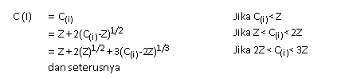
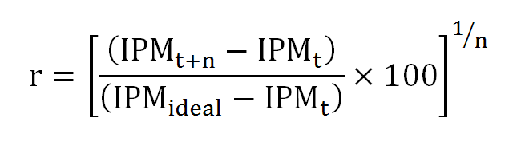

I. Pembangunan Manusia Mengutip isi Human Development Report (HDR) pertama tahun 1990, pembangunan manusia adalah suatu proses untuk memperbanyak pilihan-pilihan yang dimiliki oleh manusia. Diantara banyak pilihan tersebut, pilihan yang terpenting adalah untuk berumur panjang dan sehat, untuk berilmu pengetahuan, dan untuk mempunyai akses terhadap sumber daya yang dibutuhkan agar dapat hidup secara layak.
II. Indeks Pembangunan Manusia (IPM) Indeks Pembangunan Manusia (IPM) mengukur capaian pembangunan manusia berbasis sejumlah komponen dasar kualitas hidup. Sebagai ukuran kualitas hidup, IPM dibangun melalui pendekatan tiga dimensi dasar. Dimensi tersebut mencakup umur panjang dan sehat; pengetahuan, dan kehidupan yang layak. Ketiga dimensi tersebut memiliki pengertian sangat luas karena terkait banyak faktor. Untuk mengukur dimensi kesehatan, digunakan angka harapan hidup waktu lahir. Selanjutnya untuk mengukur dimensi pengetahuan digunakan gabungan indikator angka melek huruf dan rata-rata lama sekolah. Adapun untuk mengukur dimensi hidup layak digunakan indikator kemampuan daya beli masyarakat terhadap sejumlah kebutuhan pokok yang dilihat dari rata-rata besarnya pengeluaran per kapita sebagai pendekatan pendapatan yang mewakili capaian pembangunan untuk hidup layak.
III. Komponen Indeks Pembangunan Manusia
a. Angka Harapan Hidup
Angka Harapan Hidup (AHH) pada waktu lahir merupakan rata-rata perkiraan banyak tahun yang dapat ditempuh oleh seseorang selama hidup.
b. Angka Melek Huruf
Angka melek huruf adalah persentase penduduk usia 15 tahun keatas yang dapat membaca dan menulis huruf latin dan atau huruf lainnya.
c. Rata-Rata Lama Sekolah
Rata-rata lama sekolah menggambarkan jumlah tahun yang digunakan oleh penduduk usia 15 tahun keatas dalam menjalani pendidikan formal.
d. Pengeluaran Riil per Kapita yang disesuaikan
UNDP mengukur standar hidup layak menggunakan Produk Domestik Bruto (PDB) riil yang disesuaikan, sedangkan BPS dalam menghitung standar hidup layak menggunakan rata-rata pengeluaran per kapita riil yang disesuaikan dengan formula Atkinson.
Keterangan :
C(i) = PPP dari nilai riil pengeluaran per kapita.
Z = Batas tingkat pengeluaran yang ditetapkan secara arbiter sebesar Rp549.500 per kapita per tahun atau Rp 1.500 per kapita per hari
I. Penyusunan Indeks pembangunan manusia (IPM)
Sebelum penghitungan IPM, setiap komponen IPM harus dihitung indeksnya. Formula yang digunakan dalam penghitungan indeks komponen IPM adalah sebagai berikut:
Keterangan :
X(i) = Komponen IPM ke-i
X(min) = Nilai minimum dari komponen IPM ke-i
X(maks) = Nilai maksimum dari komponen IPM ke-i.
II. Reduksi Shortfall
Untuk mengukur kecepatan perkembangan IPM dalam suatu kurun waktu digunakan ukuran reduksi shortfall per tahun. Reduksi shortfall menunjukkan perbandingan antara capaian yang telah ditempuh dengan capaian yang harus ditempuh untuk mencapai titik IPM ideal (100). Semakin tinggi nilai reduksi shortfall, semakin cepat peningkatan IPM.
Keterangan:
r = Reduksi Shortfall
t = tahun
n = selisih tahun antar-IPM
IPMideal = 100